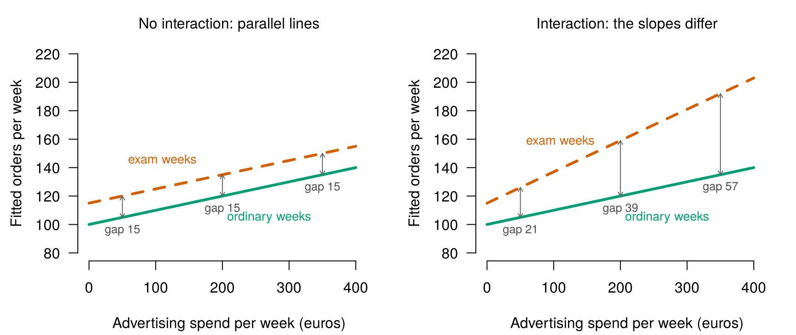
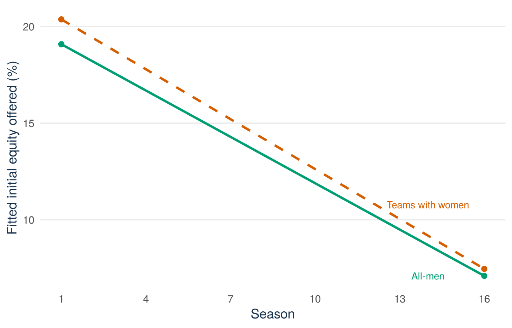
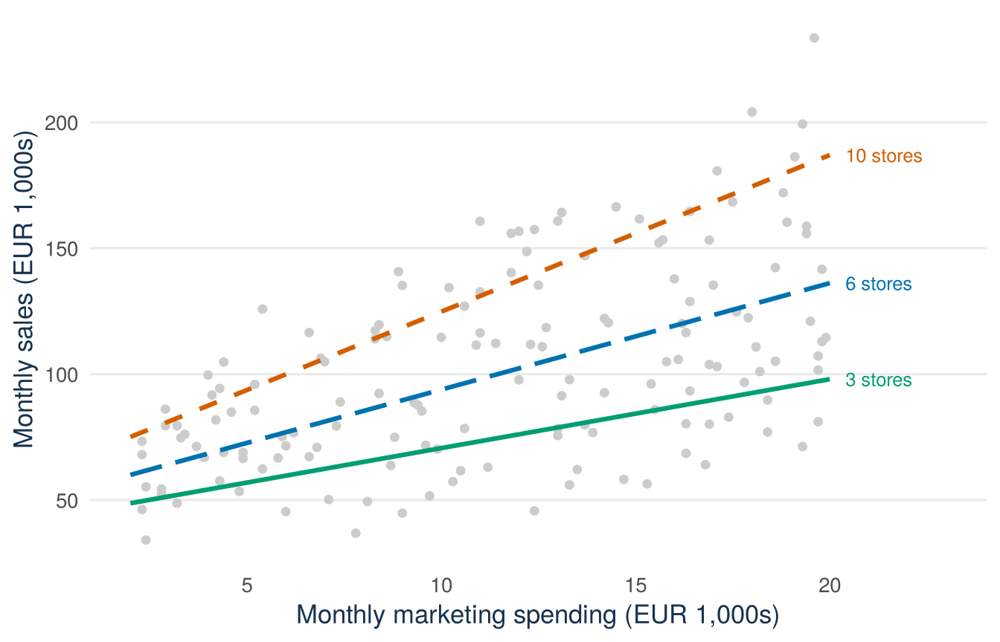
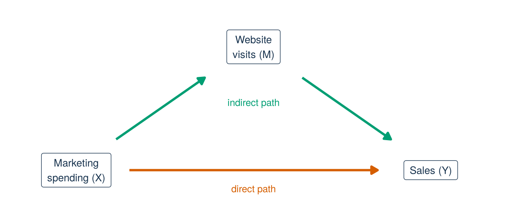
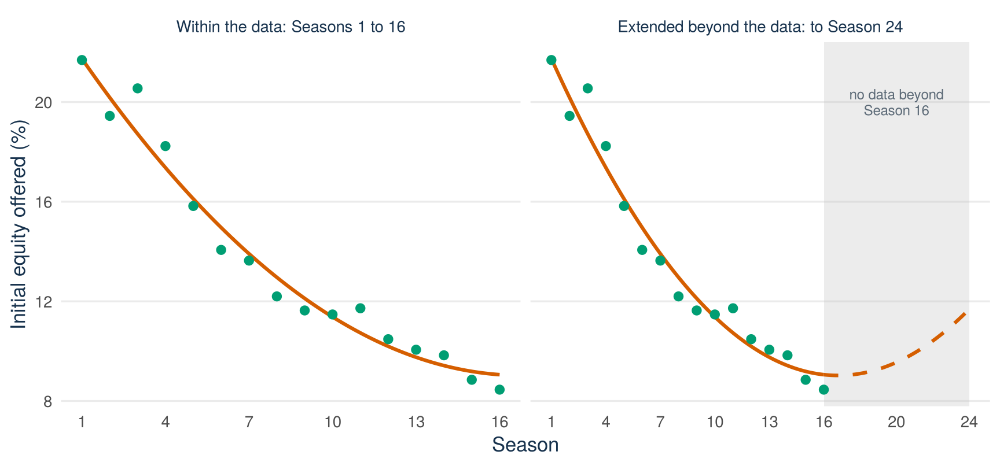

sharks <- read.csv("data/shark_tank_teaching.csv", stringsAsFactors = FALSE)
sharks$ask_1k <- sharks$ask_amount_usd / 1000
known_gender <- subset(sharks, pitcher_gender_group != "unknown")
known_gender$women <- as.integer(
known_gender$pitcher_gender_group %in% c("all_women", "mixed")
)
known_gender$season_c <- known_gender$season - mean(known_gender$season)
plot(equity_offered_pct ~ season, data = known_gender,
pch = 16, col = "grey80")
abline(lm(equity_offered_pct ~ season,
data = subset(known_gender, women == 0)),
col = "#0072B2", lwd = 3)
abline(lm(equity_offered_pct ~ season,
data = subset(known_gender, women == 1)),
col = "#D55E00", lwd = 3)Lecture 6: Interactions and curvature
By the end of Lecture 6, you can
- interpret an interaction coefficient as a difference in slopes, also when it is not significant,
- tell a moderator from a mediator and a confounder,
- fit a quadratic term and compute a fitted change from the curve,
- test added terms jointly and avoid using a curve beyond the data.
Driving question
An average can hide what matters. Advertising may work much better in the weeks before Christmas than in quiet weeks. Growth may slow down as a market fills up. A more flexible model lets the effect of one variable depend on another, or captures a relationship that is not a straight line.
The equity offered (equity_offered_pct) in the Shark Tank file falls over the seasons. Is this trend the same for every kind of presenting team, and is it a straight line at all?
Before class
Do all the preparation below before class.
Video preparation
Watch these parts of Brandon Foltz’s Statistics 101 series before class.
- Nonlinear Regression, The Very Basics, from 1:41 to 20:31. Focus on how a residual plot reveals a curve and how a squared term fits it.
- Nonlinear Regression, The Quadratic Model, from 4:33 to 7:06. Focus on how the signs of the two coefficients decide the shape of the curve.
- Two-way ANOVA with Replication, Interactions, from 3:25 to 5:20, then from 9:23 to 16:35. Focus on what it means that the effect of one factor depends on another.
Where these videos differ from this book
- At about 8:10 in the first video Foltz calls the curved residual pattern “non-constant variance”. It is a curve, and it means that a straight line has the wrong shape.
- His rules for the shape of a quadratic curve hold when the predictor takes only positive values, as weeks on the job do.
- He says that an interaction shows when lines cross or would cross. In this book any lines that are not parallel show an interaction. They do not need to cross.
- The plant food study is an experiment with random assignment, so causal words fit there. The pitch data come from observation, not from an experiment.
The videos explain key ideas in another way. The lecture material and its notation always come first.
If you are not sure about products, powers, or centring, review Mathematics Refresher: products, interactions, and combined effects and polynomial terms.
From one equation to two lines. An invented example. A café models its daily sales in euros with the temperature in degrees Celsius and a dummy weekend, which is 1 on Saturdays and Sundays and 0 on other days:
sales = 200 + 3 × temperature + 50 × weekend + 2 × temperature × weekend.
- Set weekend = 0 and simplify. Write the result as intercept + slope × temperature.
- Set weekend = 1 and simplify in the same way.
- Which numbers differ between the two lines?
Check your preparation
- Weekdays: sales = 200 + 3 × temperature.
- Weekends: sales = (200 + 50) + (3 + 2) × temperature = 250 + 5 × temperature.
- Both numbers differ. At the weekend the line starts 50 euros higher, and each extra degree goes with 2 euros more in sales than on a weekday: 5 euros instead of 3.
The same steps work for the general model \(Y=\beta_0+\beta_1X+\beta_2D+\beta_3XD+\varepsilon\) with a dummy \(D\in\{0,1\}\). For \(D=0\): \(E[Y\mid X,D=0]=\beta_0+\beta_1X\). For \(D=1\): \(E[Y\mid X,D=1]=(\beta_0+\beta_2)+(\beta_1+\beta_3)X\). Setting \(D=1\) shifts the intercept by \(\beta_2\) and the slope by \(\beta_3\).
R warm-up. Build the variables for the analysis. The code uses the same known_gender subset as Lecture 5: the 1,434 pitches with a known team classification. It adds a dummy women and a centred season season_c, which is the season minus the mean season. It then fits one line of equity offered on season for each group and draws both lines. In the plot each grey point is one pitch, the blue line belongs to all-men teams and the orange line to teams with women. Bring the plot:
Code along (bring your laptop). Bring a charged laptop with RStudio and the course project open. All the code of the lecture is in this chapter, ready to copy. You can run each step yourself during the lecture and get the same numbers and figures.
Predict. Answer this question before you run the R warm-up above. Over the 16 seasons, the equity offered by all-men teams fell by about 0.8 percentage points per season. For teams with at least one woman, did it fall (a) clearly faster, (b) clearly slower, or (c) at about the same speed? Choose one answer. Your plot from the R warm-up and the lecture material show the answer.
Lecture material
Start with a founder’s question
Does advertising work equally well in every week? Does a trend go on in a straight line forever? Often the answer is “it depends”. Lecture 5 used dummies to let the height of a regression line differ between groups, and the partial F-test to check several terms at once. This lecture adds two more terms that let you check “it depends” in the data. An interaction term lets a slope differ between groups, or change with the value of another predictor. A quadratic term lets a slope change as the predictor itself grows. The partial F-test of Lecture 5 then tells you whether the data support the extra term.
The picture before the formula
In every model so far, all groups had the same slope. Now the slope may differ as well. Start with the picture in Figure 6.1:
See the R code for this figure
old_par <- par(no.readonly = TRUE)
par(mfrow = c(1, 2), mar = c(4.2, 4.4, 2.6, 1), las = 1)
draw_panel <- function(exam_slope, title) {
plot(NA, xlim = c(0, 420), ylim = c(80, 220), bty = "n",
xlab = "Advertising spend per week (euros)",
ylab = "Fitted orders per week", main = title,
font.main = 1, cex.main = 1)
lines(c(0, 400), 100 + 0.10 * c(0, 400), col = "#009E73", lwd = 3)
lines(c(0, 400), 115 + exam_slope * c(0, 400), col = "#D55E00",
lwd = 3, lty = 2)
for (a in c(50, 200, 350)) {
y_ordinary <- 100 + 0.10 * a
y_exam <- 115 + exam_slope * a
arrows(a, y_ordinary, a, y_exam, length = 0.05, code = 3, col = "grey40")
text(a + 6, (y_ordinary + y_exam) / 2,
paste0("gap ", round(y_exam - y_ordinary)), pos = 4, cex = 0.8,
col = "grey30")
}
text(300, 100 + 0.10 * 300 - 15, "ordinary weeks", col = "#009E73",
cex = 0.85)
text(110, 115 + exam_slope * 110 + 12, "exam weeks", col = "#D55E00",
cex = 0.85)
}
draw_panel(0.10, "No interaction: parallel lines")
draw_panel(0.22, "Interaction: the slopes differ")
par(old_par)
Read the left panel first. Exam weeks have 15 more orders at every level of advertising. The gap between the lines is the same everywhere, so the lines are parallel. Each extra euro of advertising goes with 0.10 more orders in both kinds of weeks. In the right panel the gap grows, from 21 orders at 50 euros to 57 orders at 350 euros. Each extra euro goes with 0.10 more orders in ordinary weeks, but with 0.22 more orders in exam weeks. This is an interaction: the slope of advertising depends on the kind of week. You can also say it the other way round: the gap between the two kinds of week depends on advertising. Both sentences describe the same picture. The preparation video shows the same idea with plant food and feeding frequency. Any lines that are not parallel show an interaction. They do not need to cross.
Four numbers describe the right panel: an intercept and a slope for each line. These are 100 and 0.10 for ordinary weeks, and 115 and 0.22 for exam weeks. The interaction model writes the same four numbers in a different way:
\[ E[Y\mid X,D] =\beta_0+\beta_1X+\beta_2D+\beta_3XD. \]
Each coefficient is one feature of the picture:
- \(\beta_0\): where the \(D=0\) line meets the vertical axis,
- \(\beta_1\): the slope of the \(D=0\) line,
- \(\beta_2\): how much higher the \(D=1\) line starts,
- \(\beta_3\): how much steeper the \(D=1\) line is.
The same in a table with one row per group, as in the café example before class:
| Group | Intercept | Slope |
|---|---|---|
| \(D=0\) | \(\beta_0\) | \(\beta_1\) |
| \(D=1\) | \(\beta_0+\beta_2\) | \(\beta_1+\beta_3\) |
When \(\beta_3=0\) the two lines are parallel, and the model is the dummy model of Lecture 5 with one common slope.
The interaction coefficient is a difference in slopes
Definition
Interaction term. A term that is the product of two predictors, for example \(X\times D\). It lets the slope of one predictor depend on the value of the other. Its coefficient is a difference in slopes.
In the additive model the slope of \(X\) is the same at every value of the other predictor. With the product \(XD\) in the model, a one-unit increase in \(X\) changes the conditional mean by
\[ \beta_1+\beta_3D. \]
So \(\beta_3\) is the difference between the slope of the group with \(D=1\) and the slope of the reference category (\(D=0\)). It is not an effect on its own. Its unit combines the two variables. If \(X\) is measured in seasons and \(D\) is a dummy, \(\beta_3\) is in outcome units per season: here, equity percentage points per season, the group with \(D=1\) minus the reference category. The same algebra works when the second variable is a number \(Z\) and not a dummy. The slope of \(X\) is then \(\beta_1+\beta_3Z\), a slope that changes with \(Z\). The section on a continuous moderator below works through this case.
Centring. Centring a predictor means subtracting its mean. With \(XD\) in the model, \(\beta_2\) compares the two groups at \(X=0\). For the Shark Tank data this would be Season 0, which does not exist. Replacing season with
\[ \text{season\_c} = \text{season} - \overline{\text{season}} \]
moves that comparison to the average season (about 8.8). Centring changes some results and cannot change others:
- It changes the meaning and the value of the intercept and of the dummy coefficient. Both now refer to the average season.
- It cannot change the fitted values, the residuals, \(R^2\), or the interaction coefficient. The lines are the same lines. Only the place where we compare the two groups has moved.
Check: which printed numbers change when season is centred?
The intercept and the women coefficient change. The interaction coefficient, the ask_1k coefficient, all fitted values, and \(R^2\) do not. You will check this in R in the after-class practice.
Try it: two lines from four coefficients
In an invented example, a juice bar with two locations models its weekly sales in bottles with the price per bottle in euros, a dummy campus (1 for the location on campus, 0 for the location in town), and their interaction: fitted sales = 300 − 40 × price + 100 × campus − 20 × price × campus.
Step 1 (given). In town (campus = 0) the line is 300 − 40 × price.
Step 2 (you). Write the line for the campus location.
Step 3 (you). Compare the fitted sales at a price of 4 euros at the two locations, and say what the coefficient −20 means.
Check your answer
Campus: (300 + 100) + (−40 − 20) × price = 400 − 60 × price. At 4 euros: 140 bottles in town and 160 on campus. The coefficient −20 is the difference between the two slopes: each extra euro of price goes with 20 fewer bottles sold per week on campus than in town. The campus slope of −60 is 1.5 times as steep as the town slope of −40, so campus customers react more strongly to the price.
The Shark Tank interaction model
Now answer the first part of the driving question. In this lecture, women = 1 means that the presenting team is classified as all-women or mixed, and women = 0 means all-men. This split is broader than the three categories of Lecture 5. It does not measure the share of women or the full team behind the venture. As before, we leave out the seven unknown records, because a pitch without a known team cannot be placed in either group. The code first builds the variables, as in the R warm-up. It then fits the equity offered on the centred season, the dummy, their product and the requested amount. The * in the formula adds the season, the dummy and their product in one step (more on this below). summary() prints one row per coefficient:
sharks <- read.csv("data/shark_tank_teaching.csv", stringsAsFactors = FALSE)
sharks$ask_1k <- sharks$ask_amount_usd / 1000
known_gender <- subset(sharks, pitcher_gender_group != "unknown")
known_gender$women <- as.integer(
known_gender$pitcher_gender_group %in% c("all_women", "mixed")
)
known_gender$season_c <- known_gender$season - mean(known_gender$season)
interaction_model <- lm(
equity_offered_pct ~ season_c * women + ask_1k,
data = known_gender
)
summary(interaction_model)
Call:
lm(formula = equity_offered_pct ~ season_c * women + ask_1k,
data = known_gender)
Residuals:
Min 1Q Median 3Q Max
-15.871 -4.742 -1.290 3.412 82.689
Coefficients:
Estimate Std. Error t value Pr(>|t|)
(Intercept) 13.6247907 0.3354522 40.616 < 2e-16 ***
season_c -0.7993817 0.0663226 -12.053 < 2e-16 ***
women 0.8069665 0.4117061 1.960 0.0502 .
ask_1k -0.0026776 0.0005834 -4.590 4.83e-06 ***
season_c:women -0.0614594 0.0955667 -0.643 0.5203
---
Signif. codes: 0 '***' 0.001 '**' 0.01 '*' 0.05 '.' 0.1 ' ' 1
Residual standard error: 7.62 on 1429 degrees of freedom
Multiple R-squared: 0.1894, Adjusted R-squared: 0.1871
F-statistic: 83.47 on 4 and 1429 DF, p-value: < 2.2e-16Example 6.1 (Worked example: reading each coefficient of the interaction model) The outcome is the equity offered in percent, so every coefficient is in percentage points. The predictor season_c is in seasons, measured from the average season. The requested amount ask_1k is in $1,000s. The reference category is all-men teams (women = 0). The code below stores the coefficients and computes the two group lines at the average requested amount:
b_int <- coef(interaction_model)
ask_bar <- mean(known_gender$ask_1k)
intercept_men <- unname(b_int["(Intercept)"] + b_int["ask_1k"] * ask_bar)
intercept_women <- intercept_men + unname(b_int["women"])
c(intercept_men = intercept_men,
intercept_women = intercept_women,
slope_men = unname(b_int["season_c"]),
slope_women = unname(b_int["season_c"] + b_int["season_c:women"])) intercept_men intercept_women slope_men slope_women
12.8661626 13.6731291 -0.7993817 -0.8608411 c(mean_season = mean(known_gender$season),
min_ask_1k = min(known_gender$ask_1k),
gap_share_of_men = unname(b_int["women"]) / intercept_men,
interaction_share_of_slope = unname(b_int["season_c:women"] /
b_int["season_c"])) mean_season min_ask_1k
8.77894003 10.00000000
gap_share_of_men interaction_share_of_slope
0.06272006 0.07688369 Step 1: the two lines. Fill in the table with one row per group. At the average requested amount, with \(\text{season\_c}\) as the predictor:
\[ \begin{aligned} \text{all-men teams: } & \widehat{\text{equity}} = 12.866 - 0.799\times\text{season\_c},\\ \text{teams with women: } & \widehat{\text{equity}} = (12.866+0.807) + (-0.7994-0.0615)\times\text{season\_c}\\ & \phantom{\widehat{\text{equity}}} = 13.673 - 0.861\times\text{season\_c}. \end{aligned} \]
Step 2: one sentence per coefficient.
season_c(\(-0.799\)). Among all-men teams, one season later is associated with an equity offered that is on average 0.80 percentage points lower, at the same requested amount. This is the slope of the reference category only. It is clearly significant (p below 0.001) and also large: 0.80 points is about 6% of the all-men level of 12.87% in the average season, every season.season_c:women(\(-0.061\)). Per one season more, the equity offered by teams with women falls 0.061 percentage points more than that of all-men teams. This is the difference between the two slopes. It is about 8% of the all-men slope.women(\(0.807\)). In the average season (about 8.8), teams with women are fitted to offer about 0.81 percentage points more equity than all-men teams, at the same requested amount. With the interaction in the model, this difference holds only where \(\text{season\_c}=0\). In other seasons the gap is \(0.807-0.061\times\text{season\_c}\). The p-value is 0.050, right at the 5% border, and the gap is small (Step 3).ask_1k(\(-0.0027\)). A request that is $1,000 higher is associated with an equity offered that is on average 0.0027 percentage points lower, in both groups. Per $100,000 more, this is about 0.27 percentage points. The coefficient is clearly significant (p below 0.001), but per typical difference in requests it is modest. A request that is one standard deviation (about $349,000) higher goes with about 0.93 points less equity offered, about 7% of the all-men level.- The intercept (\(13.62\)) is the fitted equity offered for all-men teams in the average season with a requested amount of $0. The smallest request in the data is $10,000, so the intercept has no useful meaning of its own.
Step 3: how large is it? In the average season, all-men teams are fitted to offer 12.87% and teams with women 13.67%. The gap is 0.81 percentage points. Measured as a percent of the all-men level, the same gap is about 6%. So “0.81 percent more” would be wrong. The coefficient is a difference in percentage points.
Why does the model use season_c and not season? The dummy coefficient always compares the groups at \(X=0\). Without centring, \(X=0\) would be Season 0, a season outside the data. Centring moves the comparison to the average season, where there are many pitches.
This answers the prediction question from before class: (c), at about the same speed. The fitted slopes are about \(-0.80\) points per season for all-men teams and \(-0.86\) for teams with women. The interaction estimate is \(-0.061\) equity percentage points per season, with a p-value of about 0.520. The difference is small, about 8% of the all-men slope (Example 6.1). Draw two conclusions from this result. First, the model gives no evidence that the season trend differs between the two groups. Second, the model does not prove that the two slopes are equal. The estimate is imprecise (standard error about 0.096). The 95% confidence interval, from confint(interaction_model), runs from about \(-0.25\) to \(0.13\). So the data are consistent with a trend for teams with women that is up to 31% steeper than the all-men slope of \(-0.80\), and also with one that is up to 16% flatter. No evidence of a difference is not proof of no difference.
Figure 6.2 shows the two fitted lines. They are built from the model, not drawn through the data. For each season from 1 to 16 and each group, predict() computes the fitted equity offered at the average requested amount, and the line connects these fitted values.
See the R code for this figure
library(ggplot2)
sharks <- read.csv("data/shark_tank_teaching.csv", stringsAsFactors = FALSE)
sharks$ask_1k <- sharks$ask_amount_usd / 1000
known_gender <- subset(sharks, pitcher_gender_group != "unknown")
known_gender$women <- as.integer(
known_gender$pitcher_gender_group %in% c("all_women", "mixed")
)
known_gender$season_c <- known_gender$season - mean(known_gender$season)
interaction_model <- lm(
equity_offered_pct ~ season_c * women + ask_1k,
data = known_gender
)
season_grid <- 1:16
ask_bar <- mean(known_gender$ask_1k)
newdat <- expand.grid(season = season_grid, women = c(0, 1))
newdat$season_c <- newdat$season - mean(known_gender$season)
newdat$ask_1k <- ask_bar
newdat$fit <- predict(interaction_model, newdata = newdat)
newdat$group <- ifelse(newdat$women == 1, "Teams with women", "All-men")
fit_men_13 <- newdat$fit[newdat$women == 0 & newdat$season == 13]
fit_women_13 <- newdat$fit[newdat$women == 1 & newdat$season == 13]
ggplot(newdat, aes(x = season, y = fit,
colour = group, linetype = group)) +
geom_line(linewidth = 1.1) +
geom_point(data = subset(newdat, season %in% c(1, 16)), size = 2.2) +
annotate("text", x = 13, y = fit_women_13 + 1.1,
label = "Teams with women",
colour = "#D55E00", size = 3.4) +
annotate("text", x = 13, y = fit_men_13 - 1.1,
label = "All-men",
colour = "#009E73", size = 3.4) +
scale_colour_manual(values = c("All-men" = "#009E73",
"Teams with women" = "#D55E00"),
guide = "none") +
scale_linetype_manual(values = c("All-men" = "solid",
"Teams with women" = "dashed"),
guide = "none") +
scale_x_continuous(breaks = seq(1, 16, by = 3)) +
labs(x = "Season", y = "Fitted initial equity offered (%)") +
theme_minimal(base_size = 13) +
theme(
panel.grid.minor = element_blank(),
panel.grid.major.x = element_blank(),
plot.caption = element_text(colour = "#5B6976"),
axis.title = element_text(colour = "#17324D")
)
Always graph a model that contains an interaction. In Figure 6.2, the main result is that the two lines are almost parallel. Both fall by about 12 to 13 points over the 16 seasons, and the gap between them stays below 1.3 points. Once \(XD\) is in the model, neither \(\hat\beta_1\) nor \(\hat\beta_2\) alone describes all teams.
A continuous moderator
So far the second variable was a dummy with two groups. Many business questions involve a second variable that is a number. Does marketing pay more in larger firms? Does a discount work better at higher prices? The second variable of an interaction can be any number \(Z\), such as a price, a firm size, or a number of stores. The model is
\[ E[Y\mid X,Z]=\beta_0+\beta_1X+\beta_2Z+\beta_3XZ, \]
and a one-unit increase in \(X\) changes the conditional mean by \(\beta_1+\beta_3Z\). There are now not two lines but one line for every value of \(Z\).
| Value of \(Z\) | Slope of \(X\) |
|---|---|
| \(Z=0\) | \(\beta_1\) |
| \(Z=1\) | \(\beta_1+\beta_3\) |
| \(Z=2\) | \(\beta_1+2\beta_3\) |
| \(Z=3\) | \(\beta_1+3\beta_3\) |
Each extra unit of \(Z\) changes the slope of \(X\) by \(\beta_3\).
Definition
Moderator. A variable \(Z\) that changes the slope of another predictor \(X\) through the interaction term \(XZ\). The slope of \(X\) at one value of \(Z\), \(\beta_1+\beta_3Z\), is called the conditional effect of \(X\) at that value.
The name “conditional effect” is standard, but it is still a fitted slope. It is a causal effect only when the design of the study allows a causal reading. Two coefficients now need care. \(\beta_1\) is the slope of \(X\) only where \(Z=0\), and \(\beta_2\) is the slope of \(Z\) only where \(X=0\). If zero lies outside the data, neither number describes any real case. The coefficients \(\beta_1\) and \(\beta_2\) are often called the main effects. With \(XZ\) in the model they are conditional too. Centring \(Z\) makes \(\beta_1\) the slope of \(X\) at the mean of \(Z\).
Example 6.2 (Worked example: marketing pays more in regions with more stores) An invented example. A franchise chain has 150 regions. For each region it records the monthly sales and the monthly marketing spending, both in €1,000s, and the number of stores. The question: does an extra €1,000 of marketing go with more sales in regions with many stores? The code below builds the invented data, prints a summary of each variable, and fits the model with the interaction term:
set.seed(606)
n_regions <- 150
stores <- sample(1:12, n_regions, replace = TRUE)
marketing <- round(runif(n_regions, min = 2, max = 20), 1)
sales <- round(40 + 0.5 * marketing + 2 * stores +
0.6 * marketing * stores + rnorm(n_regions, sd = 12), 1)
franchise <- data.frame(sales, marketing, stores)
summary(franchise) sales marketing stores
Min. : 34.10 Min. : 2.300 Min. : 1.000
1st Qu.: 71.55 1st Qu.: 6.825 1st Qu.: 3.000
Median : 96.00 Median :11.900 Median : 6.000
Mean :101.82 Mean :11.487 Mean : 6.313
3rd Qu.:124.12 3rd Qu.:16.300 3rd Qu.:10.000
Max. :233.50 Max. :19.900 Max. :12.000 moderator_model <- lm(sales ~ marketing * stores, data = franchise)
summary(moderator_model)$coefficients Estimate Std. Error t value Pr(>|t|)
(Intercept) 34.9390628 5.04430544 6.926437 1.276727e-10
marketing 1.2447659 0.39012969 3.190646 1.737988e-03
stores 2.7660964 0.68635990 4.030096 8.941761e-05
marketing:stores 0.4974708 0.05500868 9.043497 8.606008e-16The summary shows the range of the data. The number of stores runs from 1 to 12, marketing from €2,300 to €19,900 per month, and the average region sells about €101,800 per month. The coefficient table shows that all four coefficients are significant at 5%. The interaction has a t value of about 9, so the data show clearly that the marketing slope changes with the number of stores.
Step 1: the slope of marketing as a function of stores. With the coefficients from the output,
\[ \widehat{\text{slope of marketing}} = 1.245 + 0.497\times\text{stores}. \]
Step 2: the slope at three meaningful values of the moderator. Take the lower quartile, the median, and the upper quartile of the number of stores:
b_mod <- coef(moderator_model)
store_values <- quantile(franchise$stores, c(0.25, 0.5, 0.75))
store_values25% 50% 75%
3 6 10 marketing_slopes <- b_mod["marketing"] + b_mod["marketing:stores"] * store_values
marketing_slopes 25% 50% 75%
2.737178 4.229591 6.219474 marketing_slopes[3] / marketing_slopes[1] 75%
2.272221 The code takes the quartiles of the number of stores, computes the marketing slope \(1.245+0.497\times\text{stores}\) at each of them, and divides the largest slope by the smallest. In a region with 3 stores (the lower quartile), €1,000 more marketing is associated with about €2,740 more monthly sales on average. With 6 stores (the median) it is about €4,230, and with 10 stores (the upper quartile) about €6,220. The slope at the upper quartile is about 2.3 times the slope at the lower quartile.
Step 3: one sentence per coefficient.
marketing:stores(\(0.497\)). A region with one more store has a marketing slope that is 0.497 higher: about €500 more monthly sales per €1,000 of marketing. Read the other way round, a region that spends €1,000 more on marketing has a stores slope that is about €500 per store higher.marketing(\(1.245\)). This is the slope of marketing in a region with 0 stores. No region has 0 stores (the minimum is 1), so this number does not describe the marketing slope of any region.stores(\(2.766\)). This is the slope of stores at €0 of marketing. The smallest spending in the data is €2,300, so this number also lies outside the data.
Step 4: centre the moderator. With \(\text{stores\_c}\), the number of stores minus its mean, the marketing coefficient becomes the slope at the average number of stores (about 6.3):
franchise$stores_c <- franchise$stores - mean(franchise$stores)
coef(lm(sales ~ marketing * stores_c, data = franchise)) (Intercept) marketing stores_c marketing:stores_c
52.4023517 4.3854651 2.7660964 0.4974708 The marketing coefficient is now 4.385: at the average number of stores, €1,000 more marketing is associated with about €4,390 more monthly sales. The interaction coefficient stays 0.497. As with the dummy, centring moves the place of the comparison and not the fitted lines.
Figure 6.3 draws the result. The grey points are the 150 regions. The three lines are fitted values from the model: for each of 3, 6, and 10 stores, predict() computes the fitted sales over the range of marketing in the data. The lines fan out because their slopes differ: from about €2,740 to about €6,220 of sales per €1,000 of marketing.
See the R code for this figure
library(ggplot2)
set.seed(606)
n_regions <- 150
stores <- sample(1:12, n_regions, replace = TRUE)
marketing <- round(runif(n_regions, min = 2, max = 20), 1)
sales <- round(40 + 0.5 * marketing + 2 * stores +
0.6 * marketing * stores + rnorm(n_regions, sd = 12), 1)
franchise <- data.frame(sales, marketing, stores)
moderator_model <- lm(sales ~ marketing * stores, data = franchise)
lines_data <- expand.grid(marketing = seq(2, 20, length.out = 50),
stores = c(3, 6, 10))
lines_data$fit <- predict(moderator_model, newdata = lines_data)
lines_data$group <- factor(paste(lines_data$stores, "stores"),
levels = c("3 stores", "6 stores", "10 stores"))
label_data <- subset(lines_data, marketing == 20)
ggplot(franchise, aes(x = marketing, y = sales)) +
geom_point(colour = "grey80", size = 1.6) +
geom_line(data = lines_data,
aes(x = marketing, y = fit, colour = group, linetype = group),
linewidth = 1.1) +
geom_text(data = label_data,
aes(x = marketing + 0.4, y = fit, label = group, colour = group),
hjust = 0, size = 3.4) +
scale_colour_manual(values = c("3 stores" = "#009E73",
"6 stores" = "#0072B2",
"10 stores" = "#D55E00"),
guide = "none") +
scale_linetype_manual(values = c("3 stores" = "solid",
"6 stores" = "longdash",
"10 stores" = "dashed"),
guide = "none") +
coord_cartesian(xlim = c(2, 23)) +
labs(x = "Monthly marketing spending (EUR 1,000s)",
y = "Monthly sales (EUR 1,000s)") +
theme_minimal(base_size = 13) +
theme(
panel.grid.minor = element_blank(),
panel.grid.major.x = element_blank(),
plot.caption = element_text(colour = "#5B6976"),
axis.title = element_text(colour = "#17324D")
)
The hierarchy principle and the * shorthand
The hierarchy principle says: if a model contains \(XD\), keep both \(X\) and \(D\) in the model, even when one of them is not significant on its own. The same holds for \(XZ\) with a continuous moderator \(Z\). The terms \(X\) and \(D\) define the two lines, and the interaction describes the difference between these lines. If you leave out \(D\), the model forces both lines to start at the same height. This distorts the interaction coefficient. The * shorthand in an R formula follows the principle for you:
lm(y ~ x * z, data = df) # x * z expands to x + z + x:zModeration and mediation
Two words often appear in business research about a third variable: a moderator and a mediator. They describe different roles, and a regression handles them in different ways.
Moderation first. A moderator changes the strength or the direction of the relationship between \(X\) and \(Y\). With a moderator, the answer to “how is \(X\) related to \(Y\)?” is “it depends on \(Z\)”. In a regression, moderation shows up as an interaction term. You have seen two cases. In Example 6.1 the moderator is a dummy, the women group, and the season slope differs between two groups. In Example 6.2 the moderator is a number, the number of stores, and the marketing slope grows with every extra store. A moderator can also reverse a relationship, for example a price cut that raises orders for students and lowers them for a luxury segment.
A mediator plays a different role. Take marketing spending (\(X\)), website visits (\(M\)), and sales (\(Y\)). Marketing brings visitors to the website, and visitors buy. Marketing can also raise sales in other ways, for example through people who see an advert and buy in a shop. Figure 6.4 shows the two paths. The terms below name the variable in the middle and the effects along the paths.
Definition
Mediator. A variable \(M\) that lies on the path from \(X\) to \(Y\): \(X\) affects \(M\), and \(M\) affects \(Y\).
Total effect. How much \(Y\) changes when \(X\) changes, by all paths together.
Direct effect. The part of the total effect that does not run through \(M\).
Indirect effect. The part of the total effect that runs through \(M\). The total effect is the direct effect plus the indirect effect.
See the R code for this figure
library(ggplot2)
boxes <- data.frame(x = c(1, 3, 5), y = c(1, 2, 1),
label = c("Marketing\nspending (X)",
"Website\nvisits (M)",
"Sales (Y)"))
arrows_data <- data.frame(x = c(1.45, 3.55, 1.6),
y = c(1.25, 1.75, 1),
xend = c(2.45, 4.55, 4.4),
yend = c(1.75, 1.25, 1),
path = c("indirect", "indirect", "direct"))
ggplot() +
geom_segment(data = arrows_data,
aes(x = x, y = y, xend = xend, yend = yend, colour = path),
linewidth = 1.1,
arrow = arrow(length = grid::unit(0.25, "cm"), type = "closed")) +
geom_label(data = boxes, aes(x = x, y = y, label = label),
colour = "#17324D", size = 3.6, label.padding = grid::unit(0.4, "lines")) +
annotate("text", x = 3, y = 1.55, label = "indirect path",
colour = "#009E73", size = 3.4) +
annotate("text", x = 3, y = 0.85, label = "direct path",
colour = "#D55E00", size = 3.4) +
scale_colour_manual(values = c("indirect" = "#009E73",
"direct" = "#D55E00"),
guide = "none") +
coord_cartesian(xlim = c(0.4, 5.6), ylim = c(0.7, 2.3)) +
theme_void()
Example 6.3 (Worked example: how much of the marketing slope runs through visits?) An invented example. For 120 small web shops we know the monthly marketing spending and the monthly sales, both in €1,000s, and the monthly website visits in 1,000s. The code below builds the invented data. It sets a direct path and a path through visits, which a real founder never knows. It then fits three regressions: sales on marketing alone, sales on marketing and visits, and visits on marketing. The last lines compute the part of the marketing slope that runs through visits, in two ways.
set.seed(616)
n_shops <- 120
marketing <- round(runif(n_shops, min = 2, max = 12), 1)
visits <- round(4 + 1.5 * marketing + rnorm(n_shops, sd = 2), 1)
sales <- round(20 + 2 * marketing + 2 * visits + rnorm(n_shops, sd = 5), 1)
shop <- data.frame(sales, marketing, visits)
total_model <- lm(sales ~ marketing, data = shop)
direct_model <- lm(sales ~ marketing + visits, data = shop)
visits_model <- lm(visits ~ marketing, data = shop)
coef(total_model)(Intercept) marketing
28.613248 5.039895 coef(direct_model)(Intercept) marketing visits
21.194789 2.621621 1.625205 coef(visits_model)(Intercept) marketing
4.564631 1.487982 total <- unname(coef(total_model)["marketing"])
direct <- unname(coef(direct_model)["marketing"])
c(total = total, direct = direct, through_visits = total - direct,
share_through_visits = (total - direct) / total) total direct through_visits
5.0398953 2.6216208 2.4182745
share_through_visits
0.4798263 unname(coef(visits_model)["marketing"] * coef(direct_model)["visits"])[1] 2.418274Step 1: the total association. Without visits in the model, €1,000 more marketing is associated with about €5,040 more monthly sales on average.
Step 2: the direct part. With visits added, the marketing coefficient falls to 2.62. At the same number of visits, €1,000 more marketing is associated with about €2,620 more sales.
Step 3: the part through visits. The difference is \(5.04-2.62=2.42\), about €2,420 of sales per €1,000 of marketing. That is about 48% of the total. The same number comes from the two paths. €1,000 more marketing goes with about 1,490 more visits (\(1.488\) in 1,000s), and 1,000 more visits go with about €1,630 more sales at the same marketing (\(1.625\)). The product is \(1.488\times1.625\approx2.42\).
A mediator is not a control variable. In Lecture 4 you added control variables to hold confounders fixed. A mediator looks like one more predictor, but adding it changes the question. With visits in the model, the marketing coefficient no longer contains the part that runs through visits. If you want the total effect of marketing, do not control for visits. So ask first what role a variable plays. Control for a confounder. Do not control for a mediator when you want the total effect.
Mediation is a causal idea. It needs a causal design, such as an experiment, or strong assumptions. With observational data, the split into a direct and an indirect part only describes the data.
The table compares the three roles of a third variable \(Z\).
| Role | What it is | How it appears in a regression | Example |
|---|---|---|---|
| Moderator | Changes the slope of \(X\) | Interaction term \(XZ\) | Number of stores changes the marketing slope |
| Mediator | Lies on the path from \(X\) to \(Y\) | Adding it shrinks the coefficient of \(X\) to the direct part | Website visits between marketing and sales |
| Confounder | Affects both \(X\) and \(Y\) | Control variable, to remove omitted variable bias | Firm size behind both advertising and sales |
Curvature: polynomials are still linear regression
An interaction term lets the slope of \(x\) differ by group or change with a moderator. A quadratic term, defined below, lets the slope change as \(x\) itself changes. Both add one new column to the data, a product or a square. In both, you read two coefficients together.
Is the season trend a straight line at all? To let it bend, add the square of the predictor.
Definition
Quadratic term. The square of a predictor, \(x^2\), added to a model that also contains \(x\). It lets the fitted line bend, so the slope changes with \(x\). A model with powers of a predictor is called a polynomial.
The quadratic conditional mean
\[ E[Y\mid X=x]=\beta_0+\beta_1x+\beta_2x^2 \]
is curved in \(x\), but it is linear in the unknown coefficients \(\beta_0,\beta_1,\beta_2\). Linearity in the coefficients is all that lm() requires. The square is one more column of data.
What changes is how you read the output. The slope is no longer one number. Moving from \(x\) to \(x+1\) changes the conditional mean by
\[ (\beta_1(x+1)+\beta_2(x+1)^2) - (\beta_1x+\beta_2x^2) =\beta_1+\beta_2(2x+1). \]
This change depends on the starting value \(x\). The rule is: never read \(\beta_1\) alone while \(x^2\) is in the model. Calculate fitted changes or graph the curve.
The code fits two models of the equity offered, both with the requested amount as a control. The first has a straight-line season trend, the second adds the squared season. This question does not need the team classification, so the models use all 1,441 pitches in sharks.
linear_season <- lm(equity_offered_pct ~ season + ask_1k, data = sharks)
poly_season <- lm(equity_offered_pct ~ season + I(season^2) + ask_1k,
data = sharks)
summary(poly_season)$coefficients Estimate Std. Error t value Pr(>|t|)
(Intercept) 24.171680818 0.8205664983 29.457309 1.332051e-149
season -1.713233277 0.2056686354 -8.330066 1.862369e-16
I(season^2) 0.051034200 0.0113694269 4.488722 7.737227e-06
ask_1k -0.002710806 0.0005740121 -4.722559 2.556506e-06I() tells R to calculate the square. Without I(), R would read ^ as part of the formula syntax and not as a square. The fitted coefficients are \(\hat\beta_1 \approx -1.713\) for season and \(\hat\beta_2 \approx 0.051\) for I(season^2). Together they describe a steep decline in the early seasons that becomes flatter season by season. Both are significant (p below 0.001). How large the curvature is cannot be read from \(\hat\beta_2\) alone. The worked example below turns the two coefficients into a fitted change per season.
Example 6.4 (Worked example: the fitted change from Season 5 to Season 6) Holding requested amount fixed, the fitted change from season \(x\) to season \(x+1\) is \(\hat\beta_1+\hat\beta_2(2x+1)\). From Season 5 to Season 6, \(x = 5\):
\[ \hat\beta_1+\hat\beta_2(2\times5+1) =-1.713+0.051\times11 =-1.713+0.561 \approx-1.15 \text{ percentage points.} \]
This drop of 1.15 points is about 9% of the average equity offered of 13.2%. Reading \(\hat\beta_1=-1.713\) alone would make the drop about 0.56 points too large, which is about half of the fitted drop of 1.15 points. The number \(-1.713\) is not a constant slope. It describes the slope at \(x=0\), a season that does not exist. Check the calculation in R with the stored coefficients:
b <- coef(poly_season)
unname(b["season"] + b["I(season^2)"] * (2 * 5 + 1))[1] -1.151857Is the curvature worth having? The partial F
The quadratic model and the linear model are nested, so the partial F-test of Lecture 5 applies to the one added term. anova() compares the residual sums of squares of the two models:
anova(linear_season, poly_season)Analysis of Variance Table
Model 1: equity_offered_pct ~ season + ask_1k
Model 2: equity_offered_pct ~ season + I(season^2) + ask_1k
Res.Df RSS Df Sum of Sq F Pr(>F)
1 1438 83493
2 1437 82338 1 1154.5 20.149 7.737e-06 ***
---
Signif. codes: 0 '***' 0.001 '**' 0.01 '*' 0.05 '.' 0.1 ' ' 1The partial F-test for adding I(season^2) gives \(F \approx 20.1\) with a p-value below 0.001. The data show a curve. But the gain in fit is small: adjusted \(R^2\) rises from about 0.186 to about 0.196, one percentage point more of the variation in the equity offered. So also look at the shape of the curve in Figure 6.5. Each point in the figure is the mean equity offered in one season. The curve is the fitted quadratic for a pitch with the average requested amount: predict() computes the fitted value at 200 points between Season 1 and Season 16, and the line connects them.
See the R code for this figure
library(ggplot2)
sharks <- read.csv("data/shark_tank_teaching.csv", stringsAsFactors = FALSE)
sharks$ask_1k <- sharks$ask_amount_usd / 1000
poly_season <- lm(equity_offered_pct ~ season + I(season^2) + ask_1k,
data = sharks)
season_means <- aggregate(equity_offered_pct ~ season, data = sharks, mean)
curve_data <- data.frame(season = seq(1, 16, length.out = 200),
ask_1k = mean(sharks$ask_1k))
curve_data$fit <- predict(poly_season, newdata = curve_data)
ggplot(season_means, aes(x = season, y = equity_offered_pct)) +
annotate("rect", xmin = 16, xmax = 17.6, ymin = -Inf, ymax = Inf,
fill = "grey75", alpha = 0.25) +
geom_vline(xintercept = 16, colour = "grey60",
linetype = "dashed", linewidth = 0.8) +
geom_line(data = curve_data, aes(x = season, y = fit),
colour = "#D55E00", linewidth = 1.1) +
geom_point(size = 2.6, colour = "#009E73") +
annotate("text", x = 16.8, y = max(season_means$equity_offered_pct),
label = "no data beyond\nseason 16", colour = "#5B6976",
size = 3, lineheight = 0.95) +
scale_x_continuous(breaks = seq(1, 16, by = 3)) +
coord_cartesian(xlim = c(1, 17.6)) +
labs(x = "Season", y = "Initial equity offered (%)") +
theme_minimal(base_size = 13) +
theme(
panel.grid.minor = element_blank(),
panel.grid.major.x = element_blank(),
plot.caption = element_text(colour = "#5B6976"),
axis.title = element_text(colour = "#17324D")
)
The season means lie close to the curve, and the curve flattens towards Season 16. Use the curve only for Seasons 1 to 16, the seasons in the data. Using a fitted model outside the range of the data is called extrapolation. Here it would mislead. The fitted curve reaches its lowest point at about Season 16.8 and rises after that. The data contain no season after 16, so nothing in the data supports this rise. A quadratic curve always turns somewhere, and the rise only follows from this shape. It is not a forecast for Season 17 or later.
What flexible terms can and cannot repair
- Interactions and curves make the model more flexible. They cannot fix problems in how the data were produced.
- Every added term costs precision. Add a term because your question needs it, not because it turns out to be significant.
- You can trust a curve only inside the range of the data.
What you can do with it: ask whether a relationship could differ between groups or follow a curve, add that one term, graph the fitted lines, and report combined results.
Answering the driving question
The same trend for every kind of team? The estimated difference in slopes is \(-0.061\) percentage points per season (p \(\approx\) 0.52), about 8% of the all-men slope of \(-0.80\). The data show no difference between all-men teams and teams with women. They also do not prove that the trends are equal, because the estimate is imprecise.
A straight line? Not quite. The quadratic term is significant (partial \(F \approx 20.1\), p \(<\) 0.001). The fitted decline becomes flatter: from about \(-1.56\) points per season between Seasons 1 and 2 to about \(-0.64\) between Seasons 10 and 11. A straight line gives the same drop of about 0.81 points in every season. It understates the early decline and overstates the late one. Use the curve only inside Seasons 1–16.
As a founder who prepares a pitch, you might use recent seasons as a benchmark for how much equity to offer. You might expect teams with and without women to have followed the same downward trend, and the offers to have stopped falling fast, at about 8% to 9% in the last seasons. This holds under the assumption that the season in which you pitch follows the pattern of Seasons 1 to 16. The data cannot check that assumption.
The founder’s questions at the start of the lecture get the same two kinds of answer. Whether advertising works equally well in every week is a question about an interaction. In the invented example of Figure 6.1, advertising does not work equally well: the slope is 0.10 orders per euro in ordinary weeks and 0.22 in exam weeks. Whether a trend goes on in a straight line is a question about a curve. The season trend of the equity offered does not go on in a straight line: the fitted drop per season shrinks from about 1.56 to about 0.64 points, and beyond Season 16 the data say nothing.
A founder’s decision (invented example)
You suspect that advertising works better in exam weeks. The model with an interaction gives an advertising slope of 0.10 orders per euro in ordinary weeks, and an interaction coefficient of 0.12 for exam weeks. Each order brings 6 euros of margin. When should you advertise?
Try it yourself first.
- Calculate the advertising slope in exam weeks.
- Calculate the extra orders and the extra margin from 100 euros of advertising, in ordinary weeks and in exam weeks.
- Decide.
- What should you check before you act on the interaction?
See the solution
- \(0.10+0.12=0.22\) orders per euro.
- Ordinary weeks: 10 more orders and 60 euros of margin. Exam weeks: 22 more orders and 132 euros of margin.
- In ordinary weeks, 60 euros of margin is less than the 100 euros that the advertising costs. In exam weeks, 132 euros is more. The decision: advertise in the exam weeks only.
- The interaction of 0.12 has its own confidence interval. If that interval includes zero, the data do not yet show that the two kinds of weeks differ. Then keep spreading the advertising budget over both kinds of weeks for one more study period before you decide.
Next: With dummies, interactions and curves, the regression model can now answer most “does it depend?” questions that a founder asks. Tutorial 2 practises Lectures 4–6 with exam-style questions. It ends with one full analysis, from a research question to a conclusion of 150 words. Your thesis asks for this kind of analysis too.
After class
After the lecture, work through all the practice below.
Read the lecture material
Read the Lecture material section above from start to end. The lecture covered the main ideas. The text has every step, every example, and all the code, including parts that were not shown in class. Note what is still unclear and bring it to the next tutorial, or ask Tilly, the course AI assistant.
Recall questions
- What does an interaction coefficient measure, and what is its unit in the model with season and the
womendummy? - Why centre a predictor before you use it in an interaction, and what can centring never change?
- State the hierarchy principle.
- Why is a quadratic model still a linear regression model?
- Why should you graph a quadratic curve, and why should you not extrapolate it?
- In the invented franchise model of Example 6.2, monthly sales are regressed on marketing, the number of stores, and their interaction. The coefficient of
marketingis 1.245 and that ofmarketing:storesis 0.497, with sales and marketing in €1,000s. What is the slope of marketing in a region with 6 stores? Why does 1.245 alone not describe any region? - A researcher finds that training is related to productivity, and that the relationship is stronger in large firms. A second researcher finds that training raises skills and that skills raise productivity. Which finding is about a moderator, and which about a mediator? How does each appear in a regression?
Check your answers
- How the slope of one predictor changes with the value of the other predictor. Here its unit is equity percentage points per season, as a difference between the two groups.
- So that the intercept and the dummy coefficient refer to a useful value, such as the sample mean, and not to zero. Centring never changes the fitted values, the residuals, \(R^2\), or the interaction coefficient.
- Keep \(X\) and \(D\) in the model whenever their interaction \(XD\) is in it, and keep \(x\) whenever \(x^2\) is in it.
- It is linear in the unknown coefficients. The squared column is one more predictor built from the data.
- No single coefficient is the slope, so only fitted values or the curve show what the model says. Outside the observed range the curve can turn sharply, and no data support that turn.
- \(1.245+0.497\times6\approx4.23\): in a region with 6 stores, €1,000 more marketing is associated with about €4,230 more monthly sales on average. The number 1.245 is the slope at 0 stores. No region has 0 stores, so it is a conditional effect at a value outside the data.
- Firm size is a moderator: it changes the slope of training. It appears as an interaction term of training and firm size. Skills are a mediator: they lie on the path from training to productivity. Adding skills to the model shrinks the training coefficient to the direct part, so leave skills out if you want the total effect.
Centring verification
Use the interaction model of this lecture. It regresses the equity offered, in percent, on the season, the dummy women (1 for all-women and mixed teams), their interaction, and the requested amount in thousands of dollars (ask_1k). The data are the 1,434 pitches with a known team classification (known_gender). Fit this model with and without centring season. Check that the fitted values and the interaction coefficient are unchanged. Report which coefficients do change.
Check your answer
sharks <- read.csv("data/shark_tank_teaching.csv", stringsAsFactors = FALSE)
sharks$ask_1k <- sharks$ask_amount_usd / 1000
known_gender <- subset(sharks, pitcher_gender_group != "unknown")
known_gender$women <- as.integer(
known_gender$pitcher_gender_group %in% c("all_women", "mixed")
)
known_gender$season_c <- known_gender$season - mean(known_gender$season)
uncentred <- lm(equity_offered_pct ~ season * women + ask_1k,
data = known_gender)
centred <- lm(equity_offered_pct ~ season_c * women + ask_1k,
data = known_gender)
all.equal(fitted(uncentred), fitted(centred))[1] TRUEc(uncentred = unname(coef(uncentred)["season:women"]),
centred = unname(coef(centred)["season_c:women"])) uncentred centred
-0.06145941 -0.06145941 c(women_uncentred = unname(coef(uncentred)["women"]),
women_centred = unname(coef(centred)["women"]))women_uncentred women_centred
1.3465150 0.8069665 The fitted values agree, and both interaction estimates are about \(-0.061\). The women coefficient changes from about \(1.35\) (a comparison at Season 0, which does not exist) to about \(0.81\) (a comparison at the average season, about 8.8). The intercept changes as well. Centring moved the place where we compare the two groups. It did not move the lines.
Finish a half-worked example: a quadratic change
Read the worked calculation for Season 5 to Season 6 again (Example 6.4). Then calculate the fitted change from Season 10 to Season 11 in the same model: the equity offered regressed on the season, the season squared, and the requested amount, for all 1,441 pitches.
Step 1 (given). The formula is \(\hat\beta_1+\hat\beta_2(2x+1)\) with \(x=10\), so you multiply \(\hat\beta_2\) by \(21\).
Step 2 (you). Insert \(\hat\beta_1\approx-1.713\) and \(\hat\beta_2\approx0.051\).
Step 3 (you). Compare the result with the Season 5 to 6 change and state in one sentence what the comparison shows about the trend.
Check your answer
\(-1.713+0.051\times21\approx-1.713+1.071\approx-0.64\) percentage points (with the unrounded coefficients: \(\hat\beta_1+21\hat\beta_2=-0.642\)). The drop per season has become smaller, from about \(-1.15\) (Seasons 5–6) to about \(-0.64\) (Seasons 10–11). The decline becomes flatter in later seasons. This is what a positive \(\hat\beta_2\) means.
Now do the next tasks on your own, with new coefficients from an invented example. A model of monthly revenue (€1,000s) on the age of a shop \(x\) (years) reports \(\widehat Y = 40 - 2.00x + 0.060x^2\).
- Calculate the fitted change from age 3 to age 4 and from age 8 to age 9.
- A colleague reports “revenue falls €2,000 per year of age.” Correct the sentence.
- In \(\widehat Y=10+2X+3D-0.5XD\), write the lines of both groups and interpret the interaction coefficient.
Check your answers
- Age 3 to 4: \(-2.00+0.060(2\times3+1)=-2.00+0.42=-1.58\), about \(-\text{€}1{,}580\). Age 8 to 9: \(-2.00+0.060\times17=-0.98\), about \(-\text{€}980\).
- \(-2.00\) is not the fitted change per year. With \(x^2\) in the model the change depends on age: about \(-1.58\) from age 3 to 4 and about \(-0.98\) from age 8 to 9. The decline becomes weaker as shops get older.
- For \(D=0\): \(\widehat Y=10+2X\). For \(D=1\): \(\widehat Y=13+1.5X\). The interaction coefficient \(-0.5\) says that the slope of the \(D=1\) group is 0.5 outcome units per unit of \(X\) smaller than the slope of the \(D=0\) group.
Practice: all steps together
In Lecture 4 you wrote a paragraph that connects the diagnostics of Lecture 2 to the three-predictor model of the equity offered. Add one argument to that paragraph. Propose either an interaction or a quadratic term for that model. State the question about the business or the data that motivates the term, and say how you would test whether the term belongs in the model.
Check a model answer
A good answer: “The decline over the seasons need not be a straight line. The show was new in the early seasons and pitches became more professional later, so the trend may become flatter. I would add I(season^2). I add the term because of this question about the shape, not because I am searching for a significant result. I would test it with a partial F-test against the nested linear model on the same observations (here \(F\approx20.1\), p \(<\) 0.001). I would also check that adjusted \(R^2\) rises and graph the fitted curve inside Seasons 1–16. Finally, I would report fitted changes from season to season, not the season coefficient alone.” An answer with an interaction is equally good if it names the question and the nested test. An example is the interaction of season with the women dummy, which asks whether the trend differs between the groups. Its test gives \(F\approx0.41\) and p \(\approx\) 0.52, so the term is not kept.
Review questions from past lectures
Adding the two gender dummies to the model of equity on season and requested amount reduced the residual sum of squares by 436.25 using 2 degrees of freedom, and the complete model left 82,792 on 1,429 degrees of freedom. Compute the partial F statistic and state the 5% conclusion.
Check your answer
\(F=(436.25/2)/(82{,}792/1{,}429)=218.1/57.9\approx3.76\), with p \(\approx\) 0.023. At 5%, the two category terms are jointly significant in that model, even though the t-test of the mixed dummy alone is far from significant. Joint tests and individual tests answer different questions.
Worked exam interpretation
Exam-style question. An invented example. A model of the weekly revenue of market stalls (in €100s) on opening hours per week, a dummy for indoor stalls, and their interaction reports hours 1.20, indoor 2.00, hours:indoor -0.50. A student writes: “One more opening hour raises weekly revenue by €120 for all stalls.” Correct the sentence.
Check a model answer
Two corrections. First, with the interaction in the model, 1.20 is the fitted slope of opening hours only for stalls that are not indoor (indoor = 0). For indoor stalls the slope is \(1.20-0.50=0.70\), that is, €70 of weekly revenue per opening hour. There is no single slope for all stalls. Second, “raises” claims causation. These are fitted associations among the sampled stalls, holding the other included terms fixed. The data do not come from an experiment, so they do not show an effect of opening hours.
Check the AI
You regressed the equity offered on the season, the dummy women (1 for all-women and mixed teams), their interaction, and the requested amount. You asked an AI assistant: “The interaction has a coefficient of -0.061 and a p-value of 0.52. What do I conclude?” It answered:
“The p-value proves that the season trend is identical for both groups. And the season coefficient of -0.80 is the season trend for all teams.”
Find what is wrong and write the corrected answer. This is the Verify step of Attempt → Ask → Verify → Explain.
Check your answer
Two errors. A large p-value means the data do not show a difference. It does not prove that the trends are the same, because the estimate is imprecise. And with an interaction in the model, -0.80 is the trend for the group coded 0, the all-men teams. For teams with women it is -0.80 - 0.06 = -0.86.
Make it yours
Two sentences about your own venture
Think of your own venture, or any business you know well. Name one relationship in its data whose slope could depend on something else. For example, the response to price may differ by customer segment, the result of a campaign may differ by channel, or growth may become flatter as the business gets larger. Then write two sentences. First, state the interaction or quadratic term you would add and the question behind it. Second, say what a result that is not significant would tell you, and what it would not tell you. There is no wrong answer.
See an example, then write your own
Take a student-run venture that sells meal-prep boxes on campus. “I would add an interaction of advertising spend with exam week, because my question is whether advertising works only when students are on campus. An interaction that is not significant would mean no evidence that the slopes differ. It would not prove that exam weeks make no difference.”
You can discuss this task, and any other task in this chapter, with Tilly for QM Intermediate, the course AI assistant. Ask it to read your two sentences and to check whether you treated “no evidence of a difference” as “proof of no difference”.
More practice
For extra exercises on this lecture, with worked solutions, ask Tilly for QM Intermediate, the course AI assistant. For example: “Give me an extra exercise for Intermediate Lecture 6. Show the solution only after I send my answer.”
Continue to Tutorial 2: Multiple regression and extensions.
Code sheet: Lecture 6 commands and formulas.
For a more formal treatment, see James et al., An Introduction to Statistical Learning, 2nd ed., Section 3.3.2 and Sections 3.6.4–3.6.6, and Nieuwenhuis, Statistical Methods for Business and Economics, Chapter 21.